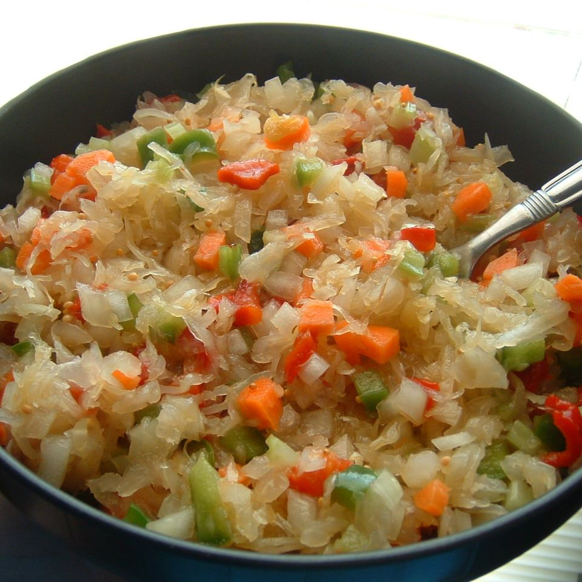

Sauerkraut Salad

Description:
Great-Grandma Maida Dixon made this salad for family gatherings. I think of her every time I make. It's sooo good. It needs to be placed in the refrigerator to allow the flavors to meld. It really is worth the wait.
Ingredients:
- 1 quart sauerkraut, drained
- 1 onion, chopped
- 2 stalks celery, chopped
- 1 green bell pepper, chopped
- 1 large carrots, chopped
- 1 (4 ounce) jar diced pimento peppers, drained
- 1 teaspoon mustard seed
- 1 ½ cups white sugar
- 1 cup vegetable oil
- ½ cup cider vinegar
Steps:
- In a large bowl, mix together sauerkraut, onion, celery, green bell pepper, carrot, pimientos, and mustard seed. Set aside this mixture.
- In a small saucepan, mix together sugar, oil, and vinegar. Bring to a boil. Remove from heat.
- Pour sugar mixture over salad, cover, and leave it in the refregerator for 2 days before serving.